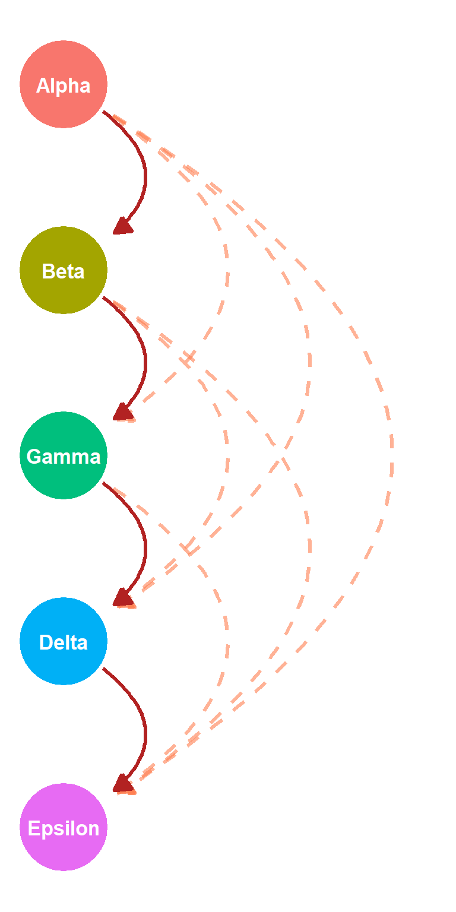
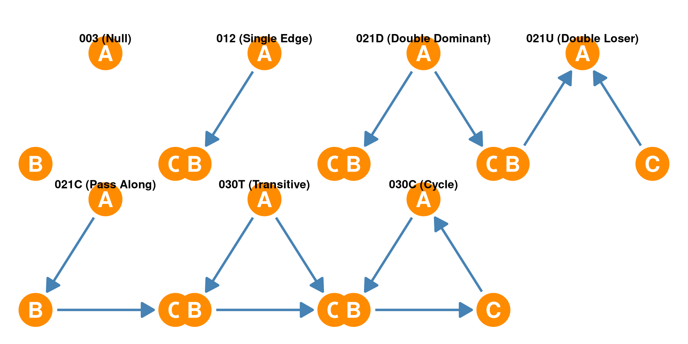

45 Dominance Hierarchies
In social network analysis, understanding how status hierarchies and dominance orders emerge often involves the concept of transitivity. A hierarchy in a social network is a structure in which there is inherent inequality in authority or deference among people. If you hold authority, dominates, or has a greater ability to leave a relationship, a hierarchy exists.
45.1 Transitivity in Dominance Orders
Transitivity is a property in which a relationship passes through nodes. In the context of dominance or hierarchy, it means that if person A dominates B, and B dominates C, then A also dominates C. This is analogous to the mathematical concept that if A > B and B > C, then A > C. In directed networks, if A is above B, then A is also considered above every actor that B is above.
45.1.1 Perfectly Linear Hierarchies: The Chicken Pecking Order
The concept of a perfectly linear hierarchy, where transitivity is consistently observed, can be clearly illustrated by chickens. When placed in a new environment, chickens engage in scuffles until a clear “pecking order” is established, like the one shown in Figure 45.1. The winner of a fight asserts dominance over the loser (represented as a directed line going from the winner to the loser), and this process continues until every chicken knows its place in the hierarchy relative to all others. The alpha chicken dominates the beta chicken and every other chicken under beta, with beta dominating gamma and every other chicken that gamma dominates and so forth. This hierarchy is ritually reinforced: a higher-status chicken will peck the head of a lower-status one, and the lower-status chicken will assent by lowering its head. This chicken “pecking order” is a classic example of a perfectly transitive dominance order.

45.1.2 Human Hierarchies: Deviations from Perfect Transitivity
Unlike chickens, human hierarchies are typically not perfectly transitive and can vary significantly depending on the context. For example, a teacher might have final authority in a classroom, but outside that setting, those authority relations may not apply or be enforceable. Similarly, someone might show deference to the President of the United States, but this hierarchy can be inverted during an election, as the President’s position depends on voters’ will. In other cases, two people might be members of different clubs, each holding a leadership position in one, meaning their authority or hierarchical position shifts depending on the specific decision or context. These examples highlight that while hierarchies exist, humans often tacitly recognize an ordering, but disagreements over the factors that determine status can arise, and hierarchies are more context-dependent. Still despite its deviations from strict linear hierarchies, human social networks can still be analyzed by comparing them to these idealized structures.
45.1.3 Types of Triads in Dominance Hierarchies
In dominance networks (like those characterizing chicken pecking orders), there are several possible types of triads, which are subgraphs of three nodes. For a linear dominance order like the one depicted in Figure 45.1 to exist, it must be transitive and contain no cyclical triads.
Here are the different types of triadic configurations observed in dominance orders:
- Null Triad: This configuration consists of three nodes with no direct dominance links between them. It represents a state in which no competitive interactions or dominance relations have been established within the specific group of three individuals.
- Single-edge Triad: In this triad, only one dominance link is present between two of the three nodes. For example, if A dominates B, but there are no other direct links between A, B, and C. This is a foundational configuration from which other, more complex hierarchies can emerge through iterative social competition.
- Double-dominant Triad: This triad emerges from a single dominant node that asserts dominance over two other distinct nodes, forming two separate outgoing dominance links from one node. For example, A dominates B, and A also dominates C. This configuration is associated with Winner Effects, in which a winning actor gains advantages (such as increased confidence or experience) from a previous encounter, making them more likely to win future contests and extend their dominance.
- Double-loser Triad: This configuration occurs when two nodes direct their dominance towards a single third node, indicating that this third node is subordinate to both. For instance, A dominates C, and B dominates C. This triad is associated with Loser Effects, in which the losing actor in an agonistic encounter experiences disadvantages (such as lowered confidence or injury), making them more prone to subsequent losses. In Graph (a) of the practice problems, a double-loser triad is depicted, where two nodes send dominance to the bottom node. This suggests that the bottom node lost the initial contest and subsequently lost to the second node due to the loser effect.
- Pass-along Triad: This configuration involves a chain of dominance, where A dominates B, and B dominates C, but there is no direct link between A and C. While it shows a form of hierarchy, it lacks the direct transitivity that defines a “pure” dominance order, in which A would necessarily dominate C.
- Transitive Triad: This is a key configuration for linear hierarchies, where if A dominates B, and B dominates C, then A also dominates C. The existence of the A-C link makes the hierarchy perfectly transitive and contributes to its linearity. This is considered an “expected” triad in dominance networks that approach a pure linear order.
- Cyclical Triad: In a cyclical triad, dominance relationships form a closed loop, such as A dominates B, B dominates C, and C dominates A. This type of triad violates transitivity and is not expected in a purely linear dominance order, as it signifies the absence of a clear, unambiguous hierarchy. The presence of such cycles is problematic for establishing a clear linear order.

45.2 Models of Hierarchy Formation
Social network analysts study the emergence of status hierarchies and dominance orders using two primary theoretical models: the attribute-based model and the interaction-based model. These frameworks provide distinct yet complementary explanations for how you attain and maintain their positions within a social hierarchy. A hierarchy is a social network structure characterized by inequality in authority or deference among actors. Deference occurs when you yield to another’s opinion or preferences without reciprocation, even if their own preferences differ.
45.2.1 The Attribute-Based Model of Hierarchy
The attribute-based model of hierarchy posits that your position in a social hierarchy is largely determined by their inherent qualities and abilities. This model aligns with intuitive notions that the “best” people rise to the top, with others ranked below them based on their relative attributes.
Core Premise: According to this model, your underlying characteristics directly influence their hierarchical standing. For instance, someone might possess academic talent, excel in sports, be humorous, or be a particularly good friend. These qualities, regardless of their specific nature, are considered “quality” in this context. The hierarchy then naturally orders individuals by these perceived attributes, with the “biggest, fastest, strongest” typically rising to the highest echelons.
Role of Deference: Roger Gould’s (2002) model explains how deference plays a crucial role in this process. If a less talented person desires to form a connection with a more talented one, they might “exchange” deference for the association. This act of yielding to the more talented person’s opinions or preferences, even when their own differ, becomes a social signal of the recipient’s quality and status. Consequently, the recipient gains greater influence over the terms of the relationship.
Influence on Tie Formation: The formation of social ties in this model is thus influenced by an actor’s inherent quality, and any inequalities in quality are often compensated for through deference. However, if the level of deference required in a relationship exceeds the acceptable limits of reciprocity, the relationship may not form at all.
This model suggests a relatively stable hierarchy that reflects underlying capabilities; it is similar to how natural or evolutionary processes might lead to dominance based on intrinsic traits.
45.3 Interaction-Based Model of Hierarchy
The interaction-based model of hierarchy formation proposes that social hierarchies emerge not solely from inherent individual attributes but also, significantly, from the sequence and outcomes of past status competitions or agonistic encounters. This model contrasts with an attribute-based model, which posits that hierarchy is a direct reflection of your underlying qualities, such as size, age, or strength (Chase 1982). Instead, the interaction-based model emphasizes how local network processes, specifically the results of competitive interactions, influence an actor’s future position in the social structure.
There are three primary types of effects that drive the formation of hierarchy within this interaction-based model: Winner Effects, Loser Effects, and Bystander Effects.
45.3.1 Winner Effects
Winner effects are the advantages or benefits that an actor gains from winning an agonistic encounter. These benefits contribute to your improved future chances in subsequent contests and their overall social position. For example, in a sports match, winning can enhance your confidence, making them more likely to win in future competitions.
The experience of successfully navigating a conflict can also lead to performance improvements. Additionally, winning has been associated with a surge in testosterone, which may be linked to increased aggression and confidence, further bolstering a winner’s propensity for future success. The emergence of “double-dominant triads” is associated with winner effects, whereby a victor in a current context can dominate another actor in a future context.
45.3.2 Loser Effects
Conversely, loser effects are the disadvantages or penalties incurred by an actor who loses an agonistic encounter. These can include reduced confidence, injury, or other setbacks that negatively affect their future prospects in competitive interactions. Just as winning can create a positive feedback loop, losing can create a negative one, making it harder for the losing person to succeed in future contests. Loser effects can lead to the emergence of “double-loser triads”, whereby a loser in a current encounter becomes the victim of an attack at a future time.
45.3.3 Bystander Effects
Bystander effects refer to the benefits and penalties that accrue to an actor who observes an agonistic encounter but does not directly participate in it. The bystander’s position is influenced by both the winner and the loser of the observed contest through observational learning. While a bystander is likely to defer (and thus accept being dominated) to the winner in a future contest, they simultaneously become stronger relative to the loser, making them more likely to dominate the loser in the future. This means that a bystander gains from the loser’s loss but loses from the winner’s gains, reinforcing the previous results of agonistic encounters.
For instance, consider three chickens: a strong one, a moderately strong one, and a weak one. If the strongest chicken fights and defeats the moderately strong chicken, the moderately strong chicken might suffer injury or a loss of confidence. As a result, the weakest chicken, who merely observed the fight, might now be able to defeat the moderately strong chicken, a feat it could not have accomplished before. This illustrates how the final hierarchy is not merely a reflection of inherent abilities but is also shaped by the order in which contests occur. Bystander effects can lead to the emergence of either “double-dominant triads” or “double-loser triads” from an initial “single-edge” triad configuration.
The overall implication of these three effects is that the resulting hierarchy within a social structure is not a purely linear, perfectly ordered arrangement based solely on individual attributes. Instead, it is a dynamic structure shaped by the history and sequence of interactions, in which intransitive triads can become transitive through these processes. This iterative and social competition guarantees transitivity and linearity in the dominance order over time. Gould’s model, which incorporates actor quality and the desire for reciprocity, also highlights how these factors influence the formation of network ties, contributing to inequalities in social influence and potentially shaping hierarchical structures. Gould’s model suggests that a relationship may not form if the required deference exceeds the tolerated lack of reciprocity. When hierarchies are unclear or ambiguous, it can lead to conflict and competition among people.